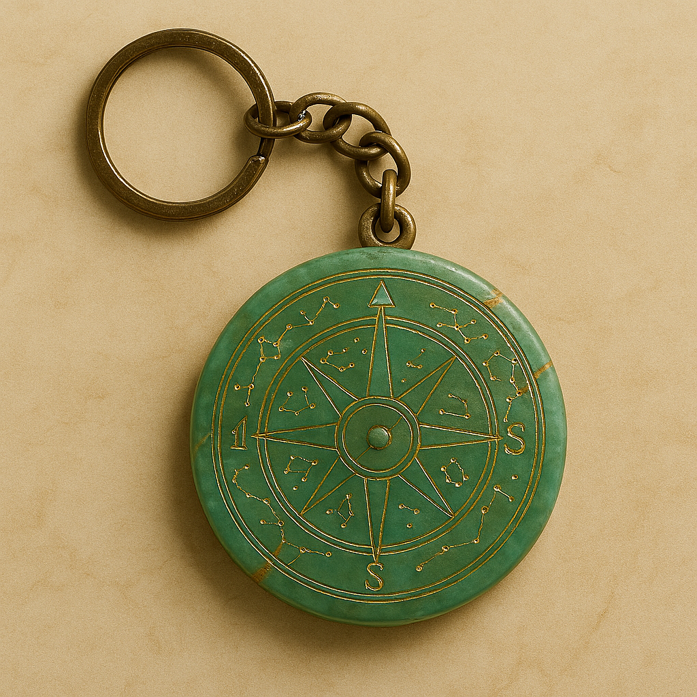
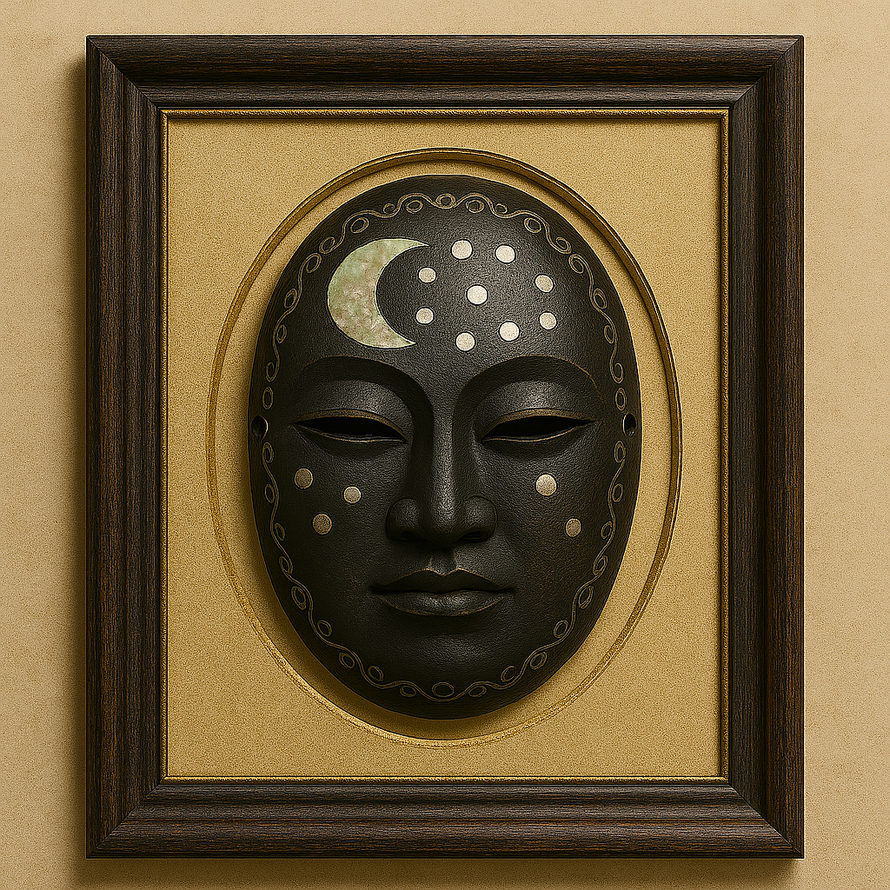
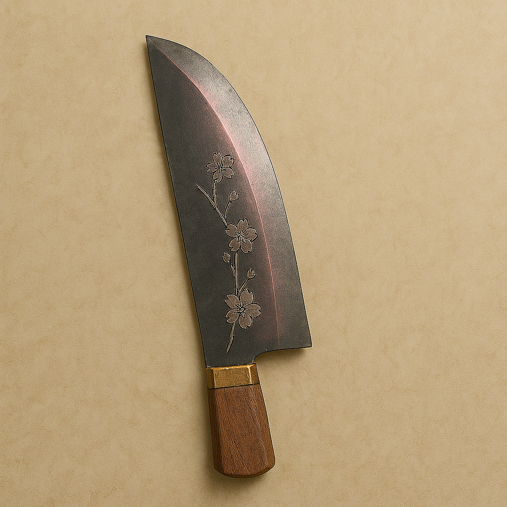
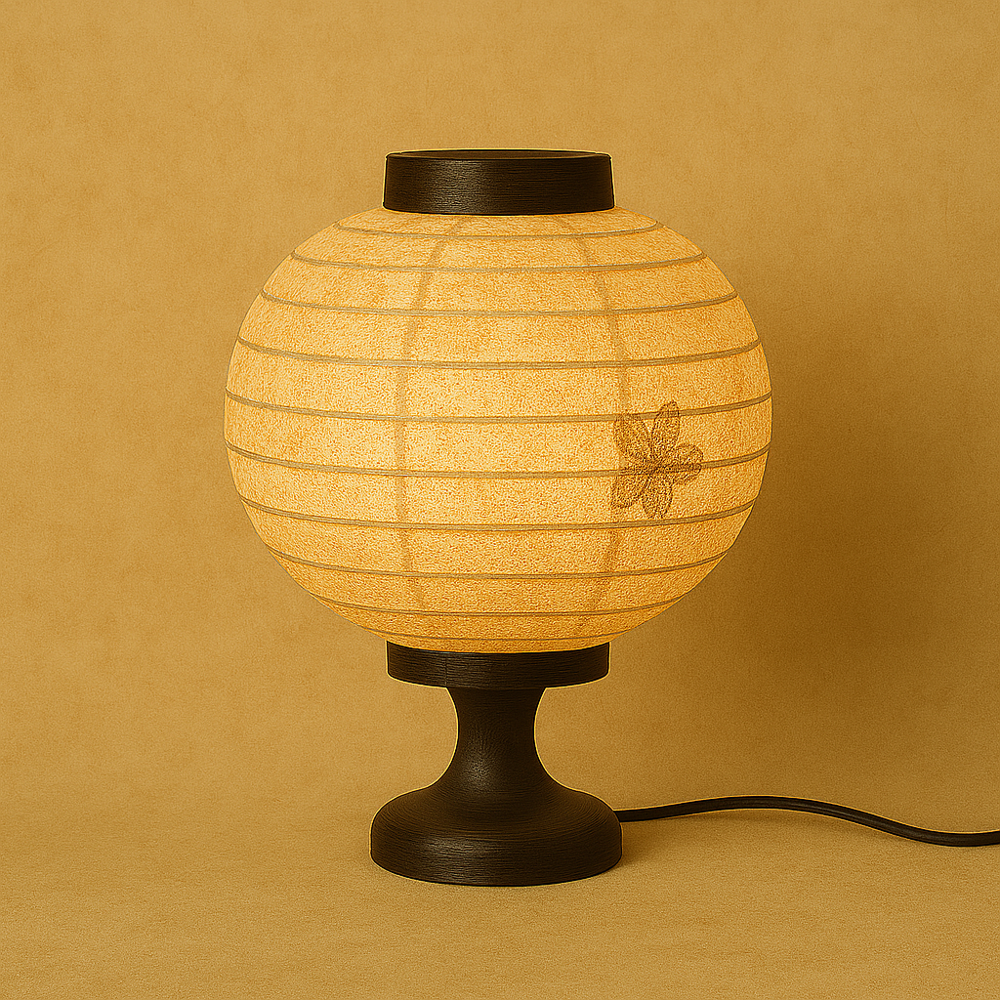
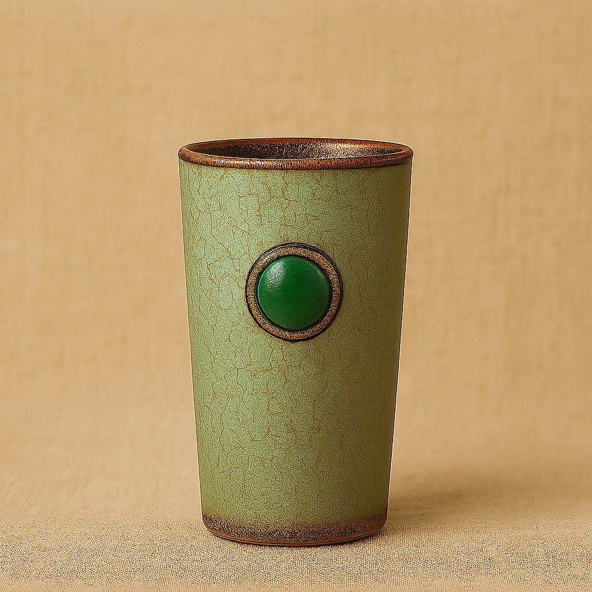
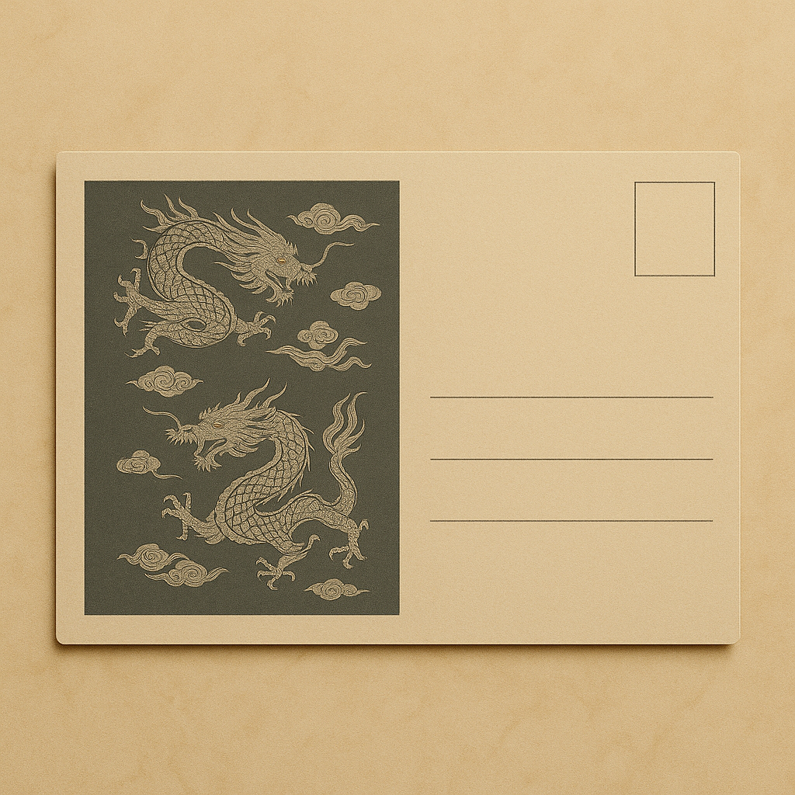

The content in this shop was created by AI under human direction. It was then curated, reviewed and edited by a human before being published. AI contributed to the concept, the written and visual content, and provided coding guidance to enhance the site’s layout and design.
Souvenir List

Jade Compass Rose Keychain
Crafted from polished jade, this keychain is inspired by a ceremonial navigation tool discovered in a Silla-era tomb in Gyeongju, Korea. Believed to guide ancient maritime journeys, it was used in shamanic rituals to seek celestial protection and orientation.
Price: $12.00

Celestial Moon Mask – Framed
This framed replica features lacquered wood and mother-of-pearl inlay, modeled after a ritual mask found in a traditional dwelling in Andong, Korea. The original was worn during eclipse ceremonies to symbolize spiritual transformation in Korean Talchum dances.
Price: $28.00

Cherry Blossom Chef’s Knife
Modeled after a ceremonial blade fragment found near Mount Fuji in Honshu, Japan, this high-carbon steel knife features cherry blossom etching. The original was likely used for ritual offerings during the Kamakura period, reflecting beauty and reverence in Japanese tradition.
Price: $24.00

Paper Lantern Table Lamp
Made from bamboo and mulberry paper, this lamp reimagines a lantern found in a forest shrine near Kyoto. The original was used during Muromachi-era rituals to honor Yokai spirits, believed to carry sacred light through ceremonial nights.
Price: $32.00

Celadon Tumbler
Crafted in jade-toned stoneware, this tumbler is inspired by the "Spirit Vessel of the Triple Realms"—a glazed porcelain form with a bronze-rimmed mouth and inset jade disks—excavated from a Goryeo-dynasty tomb near Gaeseong. The original served as a spirit container in funerary rites; this piece carries that symbolism into modern tea rituals.
Price: $16.00

Dragon Scroll Postcard
Printed on rice paper, this postcard design features twin dragons and clouds, referencing a silk burial veil found in a Ming dynasty tomb near Nanjing. Dragons symbolized power and clouds the journey to the afterlife in imperial mourning rites.
Price: $3.00